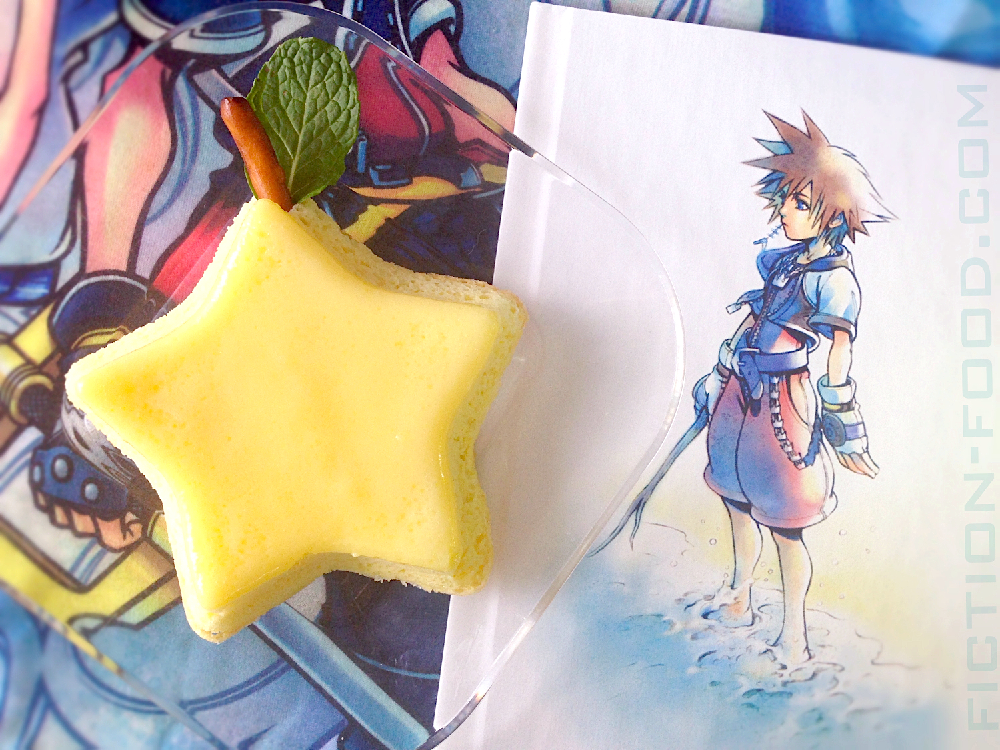
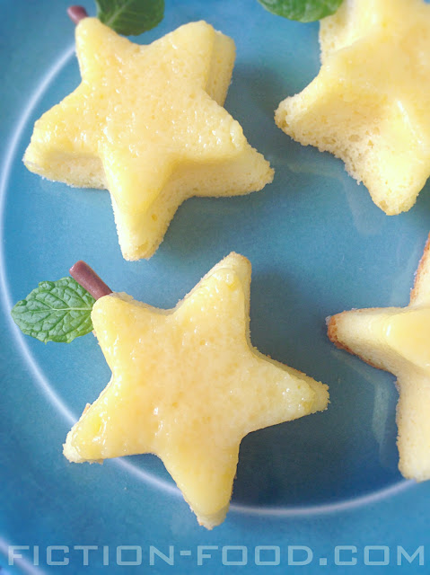

>>Main Menu
Paopu Star Fruit Cake

Description
They say if two people share this fruity star-shaped spongecake, their destinies become intertwined... "C'mon, I know you wanna try it."
Ingredients
- 1 egg, separated
- 1 tsp. Lemon Zest
- 1 Tbsp. Pineapple or Mango Juice
- 2 Tbsp. Flour
- Pinch of salt
- 1/3 Cup Buttermilk
- 1/2 Cup Sugar
- 1 Drop Yellow food color gel
- Fresh mint leaves
- Pretzel Sticks OR 1 Large chocolate tootsie roll
Important Items:
Directions
- Heat your oven to 350ºF. Butter & sugar your star mold(s) & place it/them into a baking dish. In a large bowl, beat the egg yolk, lemon zest, fruit juice, yellow gel color, sugar, & buttermilk until well combined. Add the flour & beat a little more to combine. Wash the beaters & dry them well. In a separate bowl beat the egg white & salt until stiff peaks form (this doesn't take long at high speed + moving the hand mixer around the bowl). Fold the white into the yolk mixture until just combined, still retaining air from the beaten white. Pour the resultant mixture into the mold(s), leaving ~1/2" at the top, & pour hot water into the baking dish, enough to go half way up the sides of the star mold(s). Bake for about 45-50 minutes or until the tops are golden brown. Remove from the oven.
- Place an inverted plate over the mold. Flip the mold over so the cake comes out right-side-up on the plate. If you used a cupcake mold, simply use a little tray instead of a plate. Cut a pretzel stick in half & press it a little ways into the top point of the star (as seen in the pictures in this post). Break off a nice looking mint leaf with stem & push the stem in next to the pretzel stick. If you made several little star cakes, use a tootsie roll instead of pretzel sticks. Break off a little bit of tootsie roll & roll it into a stick & press it into the top with a mint leaf. If you'd like, you can also stick mint leaves into the bottom right & left star points as well as the top (this is one way the paopu fruit is seen in the game). Best if served immediately or the same day. If serving later, wait to put the "stems" & leaves in until just before serving.
